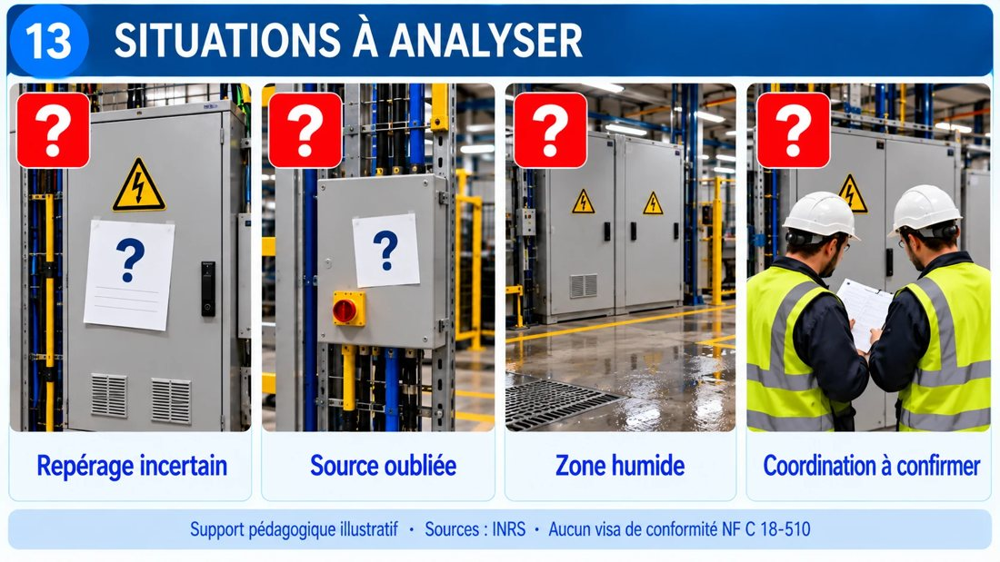
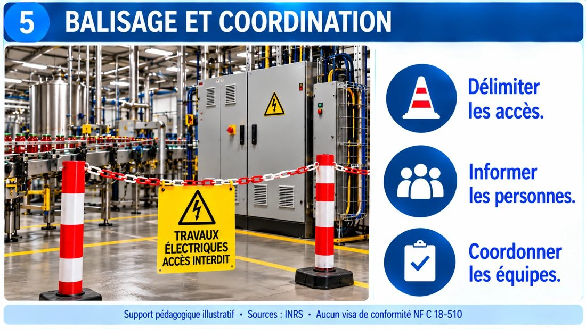

Ces habilitations ne font pas de vous un électricien. Elles servent à ce que des personnes qui ne font pas d’électricité puissent travailler sans danger dans un local réservé aux électriciens ou à proximité de pièces nues sous tension : savoir où l’on peut aller, ce que l’on ne fait jamais et à qui l’on rend compte.

Avant d’agir : repérage incertain, source oubliée, zone humide, coordination.Planche pédagogique Consul Team

Délimiter les accès, informer, coordonner.Planche pédagogique Consul Team
Trois rôles à comprendre
Qui est concerné ? Des métiers non électriciens
🧹 Agent d’entretien, nettoyage🎨 Peintre🧱 Maçon, plaquiste🌳 Jardinier, élagueur📦 Manutentionnaire, cariste🚜 Conducteur d’engin🧰 Agent de maintenance non électricien
Exemples génériques : le titre se détermine employeur par employeur, selon les tâches réellement confiées.
Pourquoi cette exigence ?
Le cadre
Les opérations dans un environnement électrique sont réservées aux travailleurs habilités (Code du travail, R. 4544-9). L’employeur délivre l’habilitation après formation, pour des tâches précises (R. 4544-10). Le formateur donne un avis ; il ne délivre pas le titre.
Le sens
Vous ne manipulez pas l’électricité : vous identifiez le risque, vous restez dans les limites fixées, vous respectez les consignes et vous rendez compte d’une anomalie au chargé de chantier.
Contact direct, contact indirect, arc électriquePlanche pédagogique Consul TeamEPI et matériels : choisir selon l’analyse des risquesPlanche pédagogique Consul Team
Jeu : « Je peux, je ne fais pas, je rends compte »
Pour chaque situation, choisissez le bon réflexe. Les mêmes situations sont reprises à l’oral pendant la séance.
À retenir. Le symbole se lit en trois caractères : tension (B ou H), type d’opération (0 : ordre non électrique), attribut V : voisinage renforcé. Le titre est établi par l’employeur ; la formation, la lecture et le score ne le remplacent pas.